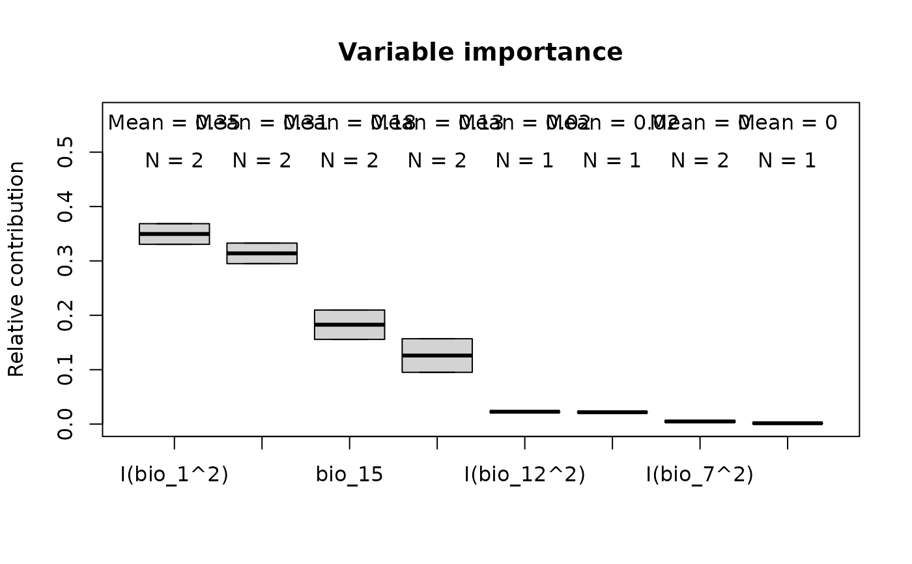
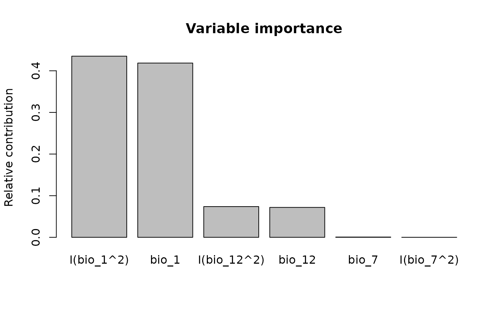

Variable importance
Usage
variable_importance(models, modelID = NULL, by_terms = FALSE,
parallel = FALSE, ncores = NULL,
progress_bar = TRUE, verbose = TRUE)Arguments
- models
an object of class
fitted_modelsreturned by thefit_selected() function.- modelID
(character). Default = NULL.
- by_terms
(logical) whether to calculate importance by model terms (e.g.,
bio1,I(bio1^2),hinge(bio1)) instead of aggregating by variable. Default = FALSE.- parallel
(logical) whether to calculate importance in parallel. Default is FALSE.
- ncores
(numeric) number of cores to use for parallel processing. Default is NULL and uses available cores - 1. This is only applicable if
parallel = TRUE.- progress_bar
(logical) whether to display a progress bar during processing. Default is TRUE.
- verbose
(logical) whether to display detailed messages during processing. Default is TRUE.
Value
A data.frame containing the relative contribution of each variable (or term
if by_terms = TRUE). An identification for distinct models is added if
fitted contains multiple models.
Examples
# Example with maxnet
# Import example of fitted_models (output of fit_selected())
data(fitted_model_maxnet, package = "kuenm2")
# Variable importance
imp_maxnet <- variable_importance(models = fitted_model_maxnet)
#>
#> Calculating variable contribution for model 1 of 2
#>
|
| | 0%
|
|======================= | 33%
|
|=============================================== | 67%
|
|======================================================================| 100%
#>
#> Calculating variable contribution for model 2 of 2
#>
|
| | 0%
|
|================== | 25%
|
|=================================== | 50%
|
|==================================================== | 75%
|
|======================================================================| 100%
# Plot
plot_importance(imp_maxnet)

# Example with glm
# Import example of fitted_models (output of fit_selected())
data(fitted_model_glm, package = "kuenm2")
# Variable importance
imp_glm <- variable_importance(models = fitted_model_glm)
#>
#> Calculating variable contribution for model 1 of 1
#>
|
| | 0%
|
|======================= | 33%
|
|=============================================== | 67%
|
|======================================================================| 100%
# Plot
plot_importance(imp_glm)
